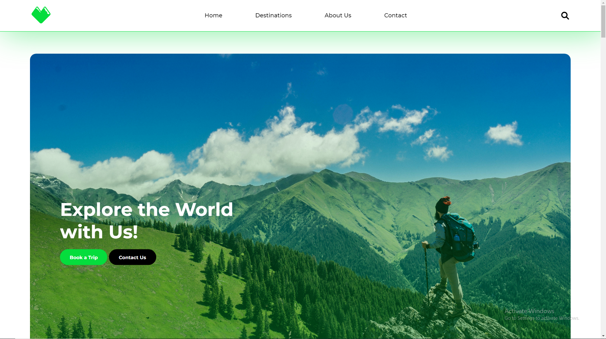
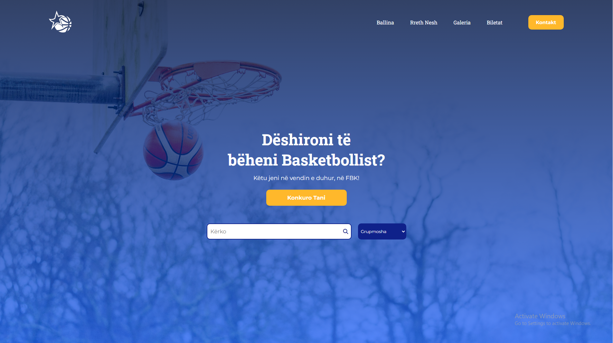

This is a Website I have made to practice myself. I have worked with
HTML and CSS. This website is used for traveling. The logo of the web
is a logo I made during High-School, combining the Heart shape with Mountains.

Project 2
I did this Website for the Basketball Federation of Kosovo, same as before
the Logo of the Web was made during High-School, combining the basketball and
the Star, an element of the flag. The tools I used for the Web are HTML and CSS.
